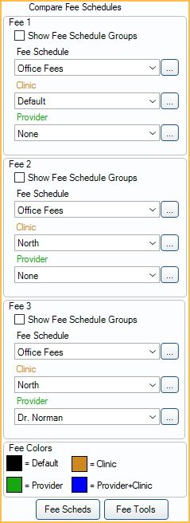

Procedure Codes
In the Main Menu, click Lists, Procedure Codes.

Alternatively:
- Press Ctrl+Shift+F.
- In the Chart Module, Enter Treatment tab, click Procedure List.
The Procedures grid lists procedure codes that exist for the highlighted categories. Fees for up to three fee schedules can be viewed at a time, each represented by a Fee column (Fee 1, Fee 2, Fee 3). The criteria set under Compare Fee Schedules determines the fees that show.
To enter fees, click in a Fee column cell. Press tab to quickly move from cell to cell.
Double-click a row to edit the Procedure Code.
Search
Search the selected category(s) for a procedure code. As users enter text the list will update with matching results.

By Abbrev: Search by procedure code abbreviation.
By Descript: Search by description text.
By Code: Search by code.
Sort Order: Choose a sort order for procedure codes. Sort by Category or Procedure Code. Set the default in Preferences, Procedure Code List sort.
By Category: The highlighted categories determine which procedure codes show in the grid. To select all categories click All.
Edit Categories Click to customize categories and sort order. See Definitions: Proc Code Categories.
Show Hidden: Check to show or hide categories marked as Hidden. Click default to set the current setting as the default. This option is only available when the Procedure Codes window is accessed via Lists, Procedure Codes.
Procedure Codes
This section is only available for users with the Procedure Code Edit Permission.

Import/Export: Import or export procedure codes in an XML format. If exporting, only codes currently showing in the grid are exported. When importing, only codes that do not yet exist in the database will be imported. Existing codes will not be edited. To import/export fees, see Fee Tools.
Tools: Launch Procedure Code Tools to remove temporary codes, update CDT codes, add missing D or N codes, and/or reset default auto codes, procedure buttons, appt proc quick adds or recall types. Buttons are only visible to users with the Setup permission.
New: Add Procedure Code (e.g., non-CDT codes or codes used in another country).
Procedures
A list of all procedure codes that exist for the selected category and meet any entered search criteria. Procedure fees for up to three fee schedules may also show, depending on the criteria set under Compare Fee Schedules.

Category: Procedure Code Category. Displays once per category when Sort Order is set to Category. No category is shown when Sort Order is set to ProcCode.
Description: Procedure code description. For non-custom codes, this is the CDT description.
Code: Procedure code.
Fee 1, Fee 2, Fee 3: Each column displays the fee for the corresponding fee schedule selected at the right under Compare Fee Schedules (e.g., Fee 1 column = Fee 1 Fee Schedule, Fee 2 column = Fee 2 Fee Schedule).
Compare Fee Schedules
Select the criteria that determines which fees show in the Procedures grid.
See Fee Override for Provider or Clinic
Show Fee Schedule Groups: For Enterprise users only. Only visible if Show Fee Schedule Groups is enabled in Preferences. Changes the Clinic dropdown to Fee Schedule Group. Check to allow edits to fee schedules grouped by clinic.
Fee Schedule: Click the dropdown or [...] to select the fee schedule.
Clinic: To view or enter fees specific to a clinic, click the drop down or [...] to select the clinic. If a user is restricted to a clinic, they will only be able to view fees for the clinic they are restricted to.
Provider: To view or enter fees specific to a provider, click the drop down or [...] to select the provider.
Fee Colors: The fee color is a quick method of identifying whether a fee is global or provider and/or clinic-specific. The default colors are listed below. Customize fee colors in Definitions: Fee Colors.
- Black: A global fee.
- Orange: Clinic-specific fee.
- Green: Provider-specific fee.
- Blue: The fee is specific to a provider and clinic.
Fee Scheds: Create Fee Schedules.
Fee Tools: Copy, export or import fees, increase fees by a percentage, or update fees for treatment planned procedures. See Fee Tools.
Enter Fees via the Procedure Code List
To quickly enter fees in a fee schedule, use the Procedure Code List.
- Highlight the procedure categories to show in the Procedures grid.
- Under Compare Fee Schedules, select the fee schedule(s) for to enter fees into. Up to three fee schedules can be selected at a time. If a fee schedule allows fees that are provider and/or clinic specific, both the clinic and provider options will be available. As a user selects criteria, the Fee 1, 2, and 3 columns will update with the current fees.
- Fee Schedule: Click the dropdown or [...] to select the fee schedule.
- Clinic: To enter fees specific to a clinic, click the drop down or [...] to select the clinic.
- Provider: To enter fees specific to a provider, click the drop down or [...] to select the provider.
- Click in a fee column and enter the fee. Press tab to quickly move from cell to cell for quick data entry.
- When finished, click Close to save the fees and close the window.
- Fee changes are not immediately reflected on charted (e.g., treatment planned) procedures. See Fees Update for information on updating fees for treatment planned procedures.
- An Audit Trail entry is made when a fee is changed.